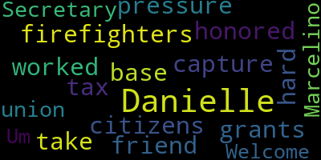

[Scarpelli]: I'm honored that a friend of ours who's worked so hard for firefighters to capture grants and take the pressure off our citizens and our tax base, Secretary for our union, Danielle Marcelino is here. Welcome, Danielle.
[Marcelino]: Um, like George said, I am the union secretary for the firefighters. I'm also, um, I'm not just a secretary. I actually have a firefighter. I work up at, um, um, I'm up at the heights now, actually. Sorry. So, um, I am here representing our union on behalf of this subject. Obviously, I'm sure many of you know that like George said, we've had a lot of trials and tribulations in the city recently. And I've been hearing from some citizens, you know, we've had discussions just with people I've come across that they think that we may just not want this headquarters or we don't like whatever is coming out of City Hall with regard to us because we are at odds with the mayor currently and that is 100% not true. We would like nothing more than a new headquarters because if anybody has either walked into our current headquarters or if you've seen any of our media that we post online is in bad shape and we would We are in desperate need of the headquarters. That being said, we do not stand behind the debt exclusion that is being brought to the citizens because, for several reasons, mostly because what is being rolled out and what the debt exclusion would be paying for is a severely inadequate design plan for our headquarters, for our department. We feel, as a union, that we can't in good conscience ask citizens to pay for a $30 million building that doesn't even meet basic needs of our department. And sadly, it doesn't meet our needs, mostly because we were completely excluded from the process to design the building. Actually, they specifically said that we were not allowed to be involved in the process. Even though within the department, the people that are living in the building, we came together, we formed a committee, we discussed the needs of the department and what we needed as a department going forward. to be able to grow and support the citizens as the city grows around us. And they, like I said, they completely disregarded anything we had to say. They never asked for our opinion and they actually told the old chief, the former chief Friedman, that he was not to let us know any information that he had about this building. When we did finally get a seat with with the chief of staff back last summer to discuss what was going on. We were told that they were getting ready to green light a project, because they thought it was wonderful. So we got a chance to take a peek at what was going on and we found a building that. It wasn't capable of supporting any growth within our department at all. Like I said, we weren't going to be able to add any more companies that could do extra with extra skills or anything like that. It was only what was currently there. We also found a building that was going to have rooms that were we call them dual occupancy. So currently we live in rooms that I, we sleep in bunk rooms with multiple people. Like it's, you know, like summer camp. Um, so this building was getting built and we were actually going to be sleeping in rooms together again. I don't know if any of you go home with your coworkers and sleep with them, but it's, it's a little strange. Um, I know.
[Scarpelli]: Um,
[Marcelino]: But that's just been the way that it's been at the fire service. And that's fire service nationwide. It was always like that in the past. But obviously, times are changing. Things are changing. We have women. We have all walks of life want to be firefighters now, which is great. And it's nice to see departments diversifying. So that being said, we need to be able to accommodate that. And the building design that we had been shown last summer actually didn't accommodate that. And it was actually, to me personally, it was a little upsetting. And that was down to bathrooms Bunk rooms showers locker rooms everything so everything was going to be like a shared space so One of the other big concerns that we had as you know the fire union had was when the police station went up I'm sure all of you know that all that ended up going in a space that was where our former training tower was in We were very upset about losing our training tower and I mean, we posted about it everywhere, and I think we picketed and everything. So we were promised, especially by this mayor, and we were promised by the former mayor, that we were going to get a training tower. And when we saw the design plan for the new headquarters, what we found was it was nothing more than a stairwell, and they were calling it a training tower. For us, training tower, our old training tower, we could actually burn. We could light things on fire in it and put it out like the way we would do in regular homes. this training tower was, like I said, it was just a stairwell and it was actually a means of egress. So the rest of the building would be using that to enter and exit the building. And, um, that is actually, you can't, can't call that training grounds if it's a means of egress, they have to be separate. So we were rather upset when we saw the design. Um, we, you know, brought these concerns up with the chief of staff. She brought them to the mayor. They seemed surprised. Um, and then, uh, they, kind of went back to the drawing board. And from then on, we actually were not allowed again, not allowed to do any, any planning. We weren't allowed to talk about our needs. So when we got another plan that was kind of brought to us by Chief Friedman in early or late last year, it again fell very short. So we're missing space for, for, um, We're missing storage space. We're missing space to be able to add more pieces of apparatus so that the department could grow. We're missing space to add more members of the department. And again, there were other shortcomings as far as bathroom space, locker space, things like that. And so, you know, we obviously are not happy with this plan. aside from not being happy with the plan, we were told the reason why this plan couldn't be any better than it was was because the budget that the city had set aside was $30 million and that they couldn't spend another dime more than the $30 million that they had. So we were like, okay, if that's it, well, we'll try to work with this. And we walked around with the contractor, we tried to make it work. And then we found out that this debt exclusion was coming out. And now we're finding out that the debt exclusion is actually for the entire $30 million project. So our question for the city was, what happened to the money that you budgeted originally? And if there were shortcomings in the budget that you had, if there was going to be a debt exclusion, why weren't you asking for extra money to be able to maybe make that happen, maybe meet the needs of the department? We're not asking for luxuries, we're just asking for basics within the headquarters. And it's actually shocking to us to see that the city is not planning to spend a single dollar on this building, and they're asking all of our citizens to foot the whole bill. And so because of all of these things, we 100% don't want to see our citizens be impacted by this, and then to turn around and actually know that the project's also going to have some severe shortcomings and it's not going to fit the needs of the department. So, you know, we're asking, we're asking people to vote no on this. We obviously, like we said, we've had a tough year. We don't have a lot of communication with the city. And so, you know, these questions really, we don't really have an opportunity to ask these questions, sit down and talk to them. We did have conversations. We did talk about things that were going to be changed. And then we were told that we were to be excluded from then on. Our former chief told us that he was specifically told that we were not supposed to be told about these things. Unfortunately, we can't even help try to make this better. So other than just the fact that there's just so many shortcomings, we really, we do not stand behind this tax increase at all. And we're asking all of you to vote no on it. We've had I've had a couple of people reach out asking us to come in support of the tax increase and I've emailed back a little better when I have a little a little bit ahead so I can be able to write it all down and edit what I have to say. So I had emailed back a couple of people and one woman specifically at one of the schools and explained why we couldn't you know we weren't in support of this and I we didn't I didn't even get so much of a thank you for your time. So. because we weren't supporting it. You know, nobody was interested in, in why we aren't supporting, or I shouldn't say nobody, that specific person was not interested in why we weren't supporting it. Um, so we feel like it's necessary that we want to get out there as to why we don't support it. But at the same time, it's a little difficult just because the current climate to, to do so without sounding like we're just a bunch of angry people and we just don't like anything. Um, so if anybody does have any questions, I, I'm available, the other union officials are available. If you ever have any questions, feel free to reach out to us. If you need our email addresses or anything, you can ask me now. Yep, George Cappelli can also get it out to you. We would be happy to talk about any of these things. We greatly appreciate everybody's support throughout everything that we've been going through this year. Everybody's been wonderful about that. Thank you.
|
total time: 0.26 minutes total words: 38  |
|||
{kind=link}